Demo system · 2026-11-27
同一份世界，换一种玩法与看法。
所有 Demo 共用 Rust 权威内核、同一套内容包 schema 与 PreviewWorld。差别只在内容与表现层：2D 俯视、2.5D 等距、3D 沉浸。你可以先玩，再去编辑器里拆开看。
 3D 对照
3D 对照霓虹下城
企业租界、私有电网、广告 AI、街坊互保与酸雨夜。和太阳城相反：垂直、封闭、按信用计价，但仍在同一套 L4/L5 规则里运行。
进入霓虹下城 →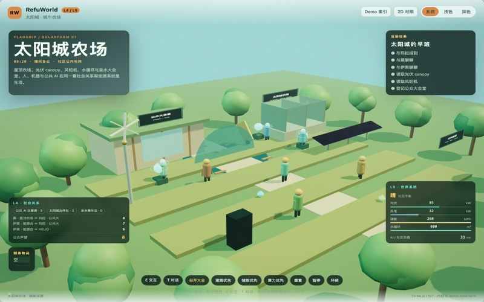
3D 旗舰太阳城农场
光伏 canopy、社区风轮机、储能、水循环与公众大会堂；人、机器、公共 AI 的社会关系和能源系统同时运转。
进入太阳城 →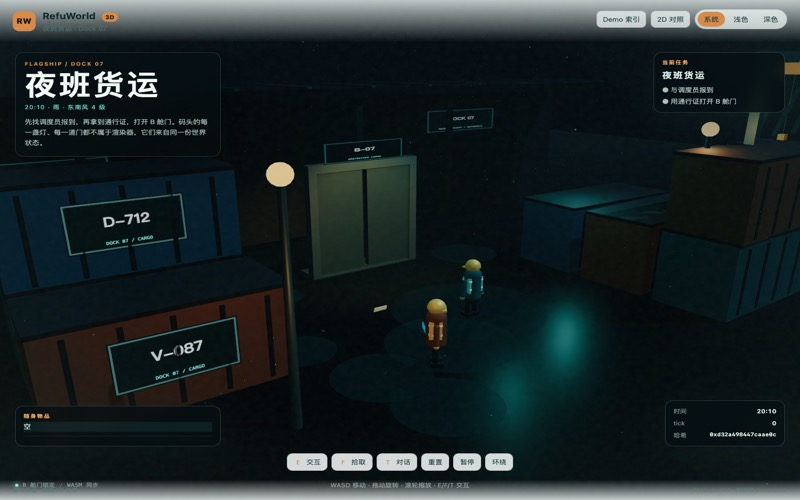
3D 旗舰夜班货运 · Dock 07
真正的 3D 码头：集装箱、吊机、货舱门、雨夜灯光与通行证。不是通用房间换色，而是为这一场戏搭的景。
进入 Dock 07 →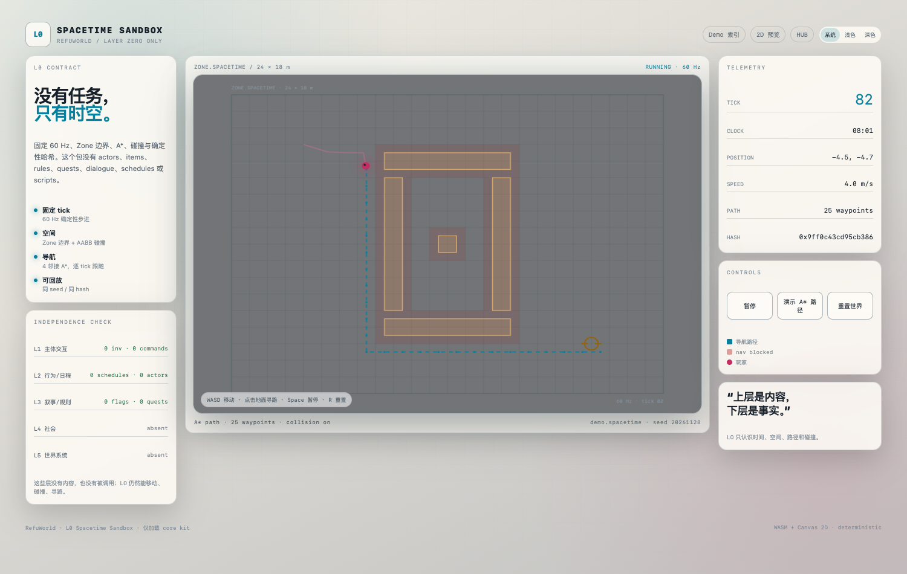
L0L0 时空沙盒
只加载 core kit：没有 actor、item、rule、quest、dialogue、schedule 或 script。固定 tick、Zone 边界、A*、碰撞和哈希仍然完整运行。
进入 L0 沙盒 →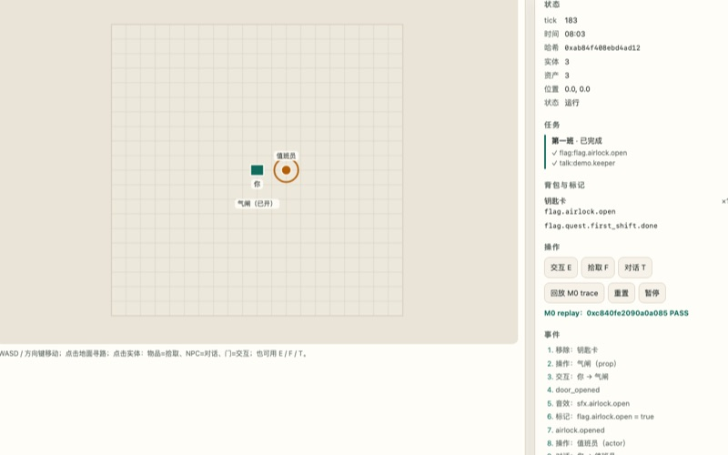
2D港湾值班室
最完整的垂直切片：值班员、气闸、钥匙卡、对话、任务与 600 tick 回放。适合先理解“世界层到底在做什么”。
打开 2D 预览 →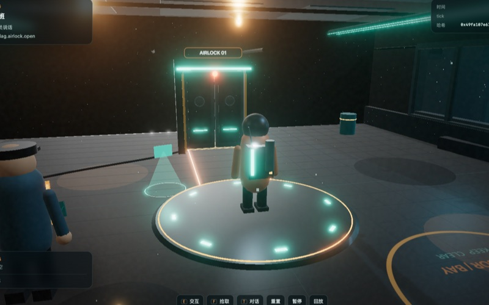
3D港湾值班室 · 3D
同一份 wasm 状态的第三人称表现：气闸滑门、对话字幕、雨夜海面、灯塔与 Bloom。3D 不复制任何玩法规则。
打开 3D 演示 →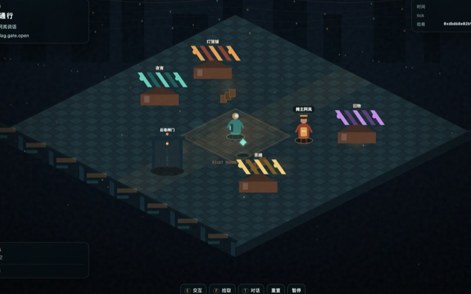
2.5D霓虹夜市
灯笼、摊位、蒸汽与湿地面。摊主阿岚让你拿筹码开后巷闸门；2.5D 等距视图最适合“可读的空间 + 氛围”。
打开 2.5D 夜市 →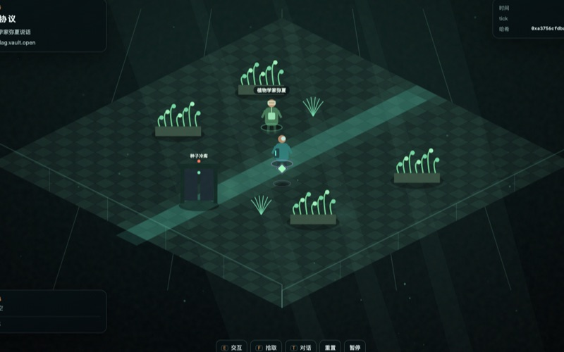
2.5D温室协议
植物学家、发光样本、种子冷库与雾中玻璃房。同一个渲染器，用另一套内容与色调变成完全不同的场景。
打开 2.5D 温室 →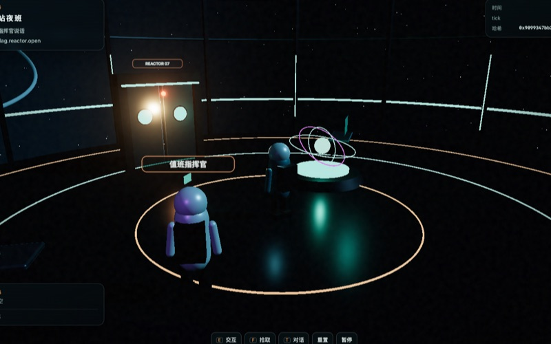
3D环形站 · 中庭
环形站中庭、行星与星海。值班指挥官让你带徽章去反应堆闸门；另一个 3D 场景，同一套交互契约。
打开环形站 →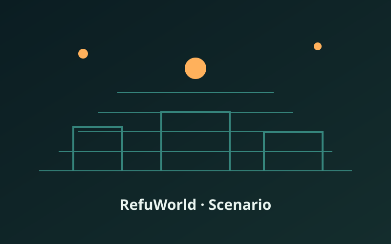
2D夜班货运
调度员、货舱门与通行证。练习“物品 → 规则 → 开门 → 任务完成”的完整链路。
打开夜班货运 →午夜食堂
厨师、餐券和后厨门。适合验证背包、对话和条件规则。
打开午夜食堂 →诊所值班
值班护士、药房门和处方卡。小空间里的任务/对话验证场景。
打开诊所值班 →末班电车
司机、车票和驾驶室门。测试移动、接近判定与开门交互。
打开末班电车 →闭馆之后
档案员、借阅证和密库门；同一套世界模型换成安静的探索空间。
打开闭馆之后 →屋顶气象站
观测员、风速记录和设备门；展示日程与交互目标如何组合。
打开屋顶气象站 →档案室
管理员、索引卡和影像库门；打开事件由 ScriptHost 记录，展示“查阅 → 解锁 → 脚本标记”。
打开档案室 →停电夜
电工、保险丝和总闸门；低光/故障叙事的交互原型。
打开停电夜 →温室补给
园丁、补给单和种子库门；适合验证收集与任务奖励。
打开温室补给 →信号站
值守员、频率卡和机房；小场景中的任务链与交互节奏。
打开信号站 →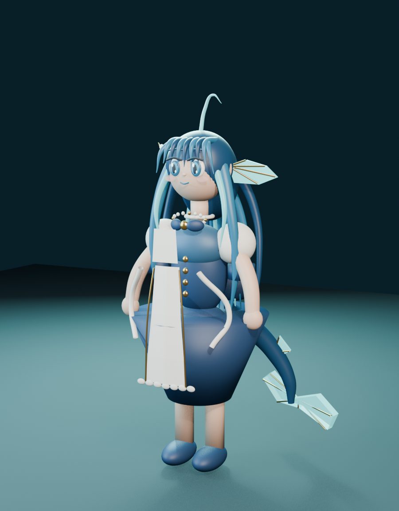
3D小鲸鱼娘
深海鲸鱼少女的 3D 角色展示：蓝发渐变、鲸鱼耳鳍与尾鳍、女仆长裙；独立 GLB + 自动环绕与呼吸/摆尾动画。
打开角色展示 →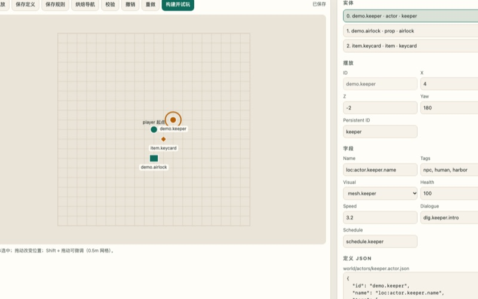
TOOL编辑器沙盒
拖动摆放、字段表单、对话图、撤销/重做、烘焙导航、构建并试玩。需要 worldc editor 本地服务器。
怎么读这套 Demo
先看差异：2D 看规则与任务，2.5D 看空间与场景，3D 看氛围与镜头。三者状态来源相同。
再看共同点：同样的 PreviewWorld、命令、事件、任务、哈希；表现层不写玩法。
然后拆开：去 GUIDE 跑编辑器，把某个 Demo 的规则改掉。